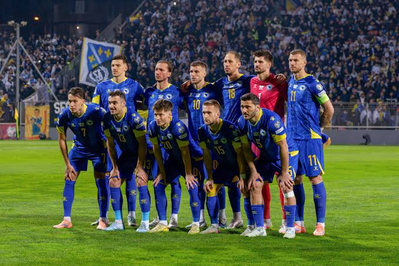

Bosnia y Herzegovina 🇧🇦
Sin títulos📍 Sede / Ciudad: Sarajevo (Estadio Asim Ferhatović Hase) / Zenica (Bilino Polje)

🇧🇦 Selección de Bosnia y Herzegovina
Bosnia y Herzegovina es una de las selecciones jóvenes del fútbol europeo. Desde su independencia ha logrado consolidarse y busca convertirse en un participante habitual de las Copas del Mundo.
Participaciones (2)
2014, 2026.
Estadísticas Mundiales
1 Victoria | 0 Empates | 2 Derrotas
⭐ Mejor resultado: Fase de grupos
Clasificación al Mundial 2026
Bosnia y Herzegovina consiguió su clasificación mediante las Eliminatorias Europeas (UEFA), logrando regresar a la Copa del Mundo después de varios años.
Historia en la Copa
La selección debutó en Brasil 2014 tras una brillante clasificación liderada por una generación histórica. Desde entonces continúa creciendo y desarrollando nuevos talentos para competir al máximo nivel internacional.
💡 Curiosidad
Su primera victoria en un Mundial llegó frente a Irán por 3-1 en Brasil 2014, un momento histórico para el fútbol bosnio.
Jugadores Convocados
- Ibrahim Šehić
- Nikola Vasilj
- Sead Kolašinac
- Anel Ahmedhodžić
- Amar Dedić
- Rade Krunić
- Benjamin Tahirović
- Amir Hadžiahmetović
- Edin Džeko
- Ermedin Demirović
- Haris Hajradinović
- Luka Menalo